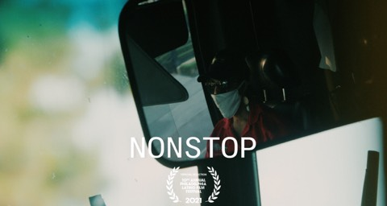
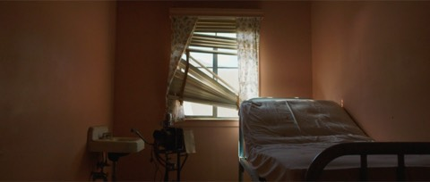
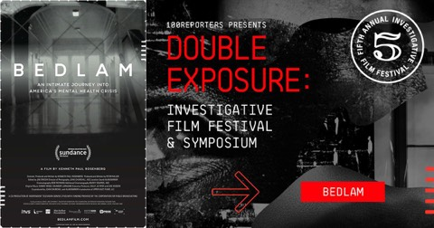
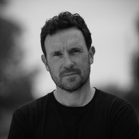
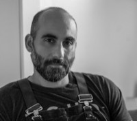

Health & medicine
Public health, pharma, pandemics and patients.
22 films · 12 sessions · 83 people
Often together with: Migration & bordersLatin AmericaChina & East AsiaLegal & safety for reportersLabor & workersCorruption & power
Films
 RescueSine Plambech2026 · 90 min
RescueSine Plambech2026 · 90 min The Drug in Our PocketAnnie Sundberg2026 · 77 min
The Drug in Our PocketAnnie Sundberg2026 · 77 min Listen to MeStephanie Etienne, Kanika Harris2025 · 77 min
Listen to MeStephanie Etienne, Kanika Harris2025 · 77 min A Shot at HistoryErika Cohn2024 · 24 min
A Shot at HistoryErika Cohn2024 · 24 min The Smallest PowerAndy Sarjahani2023 · 6 min
The Smallest PowerAndy Sarjahani2023 · 6 min American PainDarren Foster2022 · 106 min
American PainDarren Foster2022 · 106 min Into the Weeds: Dewayne “Lee” Johnson vs. Monsanto CompanyJennifer Baichwal2022 · 96 min
Into the Weeds: Dewayne “Lee” Johnson vs. Monsanto CompanyJennifer Baichwal2022 · 96 min
NonstopZac Manuel, Marta Rodriguez Maleck2021 · 12 min RIP SeniDaisy Ifama2021 · 13 min
RIP SeniDaisy Ifama2021 · 13 min The FacilitySeth Freed Wessler2021 · 26 min
The FacilitySeth Freed Wessler2021 · 26 min- The First WaveMatthew Heineman2021 · 94 min
 76 DaysHao Wu, Weixi Chen2020 · 93 min
76 DaysHao Wu, Weixi Chen2020 · 93 min
Baby GodHannah Olson2020 · 76 min CollectiveAlexander Nanau2020 · 109 min
CollectiveAlexander Nanau2020 · 109 min
BedlamKenneth Rosenberg2019 · 86 min Dark SunsJulien Elie2019 · 154 min
Dark SunsJulien Elie2019 · 154 min Poppy CrashAndalusia Knoll Soloff2019 · 11 min
Poppy CrashAndalusia Knoll Soloff2019 · 11 min The NightcrawlersAlexander A. Mora2019 · 39 min
The NightcrawlersAlexander A. Mora2019 · 39 min- Waiting for TearahJuliana Schatz Preston2019 · 23 min
 Cocaine PrisonVioleta Ayala2017 · 78 min
Cocaine PrisonVioleta Ayala2017 · 78 min Trust WHOLilian Franck2017 · 85 min
Trust WHOLilian Franck2017 · 85 min Cartel LandMatthew Heineman2015 · 100 min
Cartel LandMatthew Heineman2015 · 100 min
Sessions
- 2026 · Fri Nov 6 · 1:15pmPanelCast Out and Speaking UpLibby Liu, Miriam Shor, Ashley Kostial, Jeremiah Schofield, Matt Drange, Amelia O’Rourke-Owens
- 2025 · Fri Oct 31 · 1:15 PMPanel · DX²Closed Doors, Open Wounds: Investigating Hidden Online HarmJoy Ash, James Beal, Graham Sack
- 2022 · Thu Oct 13 · 3:45 PMWorkshopDocumentality for Filmmakers and JournalistsMalikkah Rollins, Meryl Heyliger
- 2022EventDouble Exposure Academy / DX Academy PitchJudith Helfand
- 2022 · Fri Oct 14 · 10:00 AMPanel · DX²Facing GoliathHamza Syed, Byron Hurt, Jennifer Baichwal, Nathan Halverson, Amanda Pike, Kathy Davidov
- 2022 · Thu Oct 13 · 10:00 AMConversation · DX²Opening Conversation: The Making of NavalnyDaniel Roher, David Filipov, Maria Pevchikh
- 2021 · Fri Oct 15 · 9:30amPanel · DX²Constructing the New/s: Year OneJessica Clark, Farai Chideya
- 2021 · Thu Oct 14 · 3:30pmPanelUnder Cover of CovidNanfu Wang, Eric Deggans, Pádraig Hughes, Leita Walker, Blaž Zgaga
- 2019 · Sat Oct 12 · 10:00 AMPitchCrossing BordersAnne Alvergue, Debra McClutchy, Maren Machles, Carrie Cochran, Jason Fitzroy Jeffers, Jess Swanson, Amanda Pike, Neela Banerjee, Nicole…
- 2019 · Fri Oct 11 · 9:45 AMPitchDocs in Progress PitchSara Barger, Amy Marquis, Jennifer Huang, Rodrigo Dorfman, Peter Eversoll, cai thomas, Serena Ajbani, Andrea Raby
- 2019 · Thu Oct 10 · 11:00 AMPanel · DX²Investigative Podcasts: The Sound and the FuryLaura Beil, Jennifer Forde, Samara Freemark, Sarah Larson
- 2019 · Thu Oct 10 · 4:00 PMPanel · DX²The UndertowRamona Diaz, Courtney Radsch, Andalusia Knoll Soloff, Nanfu Wang, Brenda Coughlin
People most involved
 Matthew HeinemanFilmmaker, panelist · 3 editions, 2015–2022
Matthew HeinemanFilmmaker, panelist · 3 editions, 2015–2022- Andalusia Knoll SoloffFilmmaker, panelist · 2019
- Stephanie EtiennePanelist, filmmaker · 2025
 Kanika HarrisFilmmaker, panelist · 2025
Kanika HarrisFilmmaker, panelist · 2025 Nanfu WangPanelist · 2 editions, 2019–2021
Nanfu WangPanelist · 2 editions, 2019–2021 Amanda PikePanelist, filmmaker, moderator · 6 editions, 2019–2025The Center for Investigative Reporting
Amanda PikePanelist, filmmaker, moderator · 6 editions, 2019–2025The Center for Investigative Reporting- Kathryn BigelowFilmmaker · 2015
 Violeta AyalaFilmmaker, panelist · 2 editions, 2017–2021
Violeta AyalaFilmmaker, panelist · 2 editions, 2017–2021- Lilian FranckFilmmaker · 2017
 Juliana Schatz PrestonPanelist, filmmaker · 2 editions, 2019–2021
Juliana Schatz PrestonPanelist, filmmaker · 2 editions, 2019–2021- Alexander A. MoraFilmmaker · 2019
- Julien ElieFilmmaker · 2019

- Kenneth RosenbergFilmmaker · 2019
 Dewayne “Lee” JohnsonFilm subject · 2022
Dewayne “Lee” JohnsonFilm subject · 2022- Kasha PatelModerator · 2022

Darren FosterFilmmaker · 2022

Andy SarjahaniFilmmaker · 2 editions, 2023–2024 Erika CohnFilmmaker, panelist · 3 editions, 2020–2024
Erika CohnFilmmaker, panelist · 3 editions, 2020–2024- Nita PatelFilm subject · 2024
 Lynne AdrineModerator · 2024
Lynne AdrineModerator · 2024 Candace MontagueModerator · 2025
Candace MontagueModerator · 2025- Weixi ChenFilmmaker · 2020
- Hannah OlsonFilmmaker · 2020
- Alexander NanauFilmmaker · 2020
 Zac ManuelFilmmaker · 2021
Zac ManuelFilmmaker · 2021 Marta Rodriguez MaleckFilmmaker · 2021
Marta Rodriguez MaleckFilmmaker · 2021 Sine PlambechFilmmaker · 2026
Sine PlambechFilmmaker · 2026 Daisy IfamaFilmmaker · 2021
Daisy IfamaFilmmaker · 2021
 Seth Freed WesslerFilmmaker, panelist · 2021
Seth Freed WesslerFilmmaker, panelist · 2021- Laura BeilPanelist · 2019